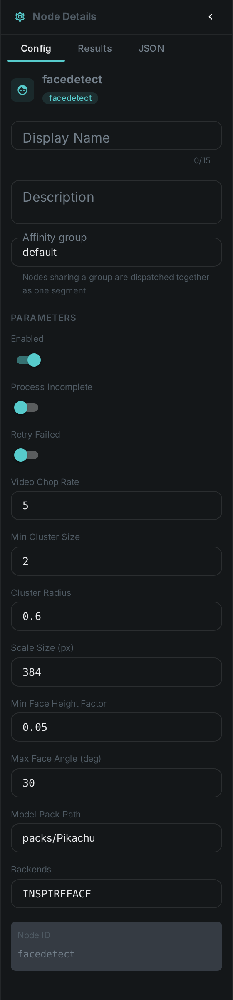
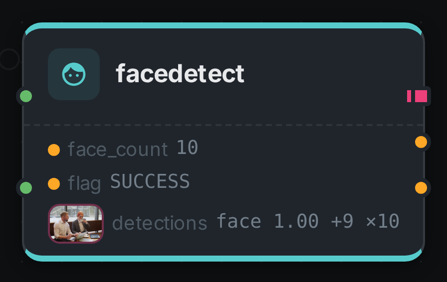
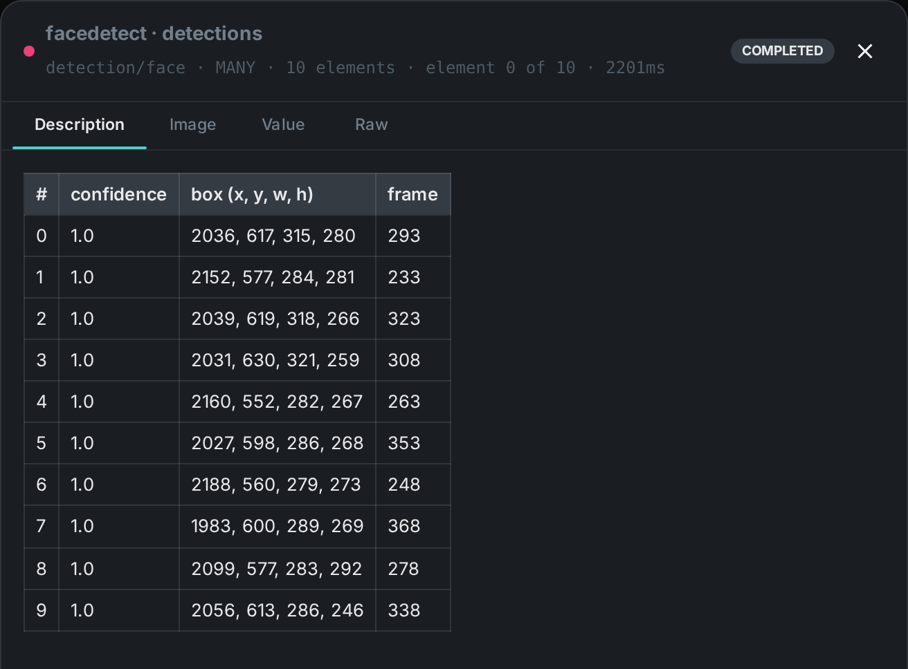

The face detection node finds faces in images and video frames and, optionally, computes face embeddings (vectors) that can be used for recognition and clustering. Video is processed by scanning frames at a configurable rate.
Kind |
|
Applies to |
Image, Video |
Input ports |
|
Output ports |
|
Requirements |
InspireFace native runtime and its model pack. CPU works; a GPU-enabled pack accelerates video/large batches. Model files require local storage and memory. |
Persists to |
|
Configuration

FacedetectNodeOptions:
| Option | Meaning |
|---|---|
|
Path to the InspireFace model pack |
|
Which InspireFace capabilities to enable (detection, recognition, …) |
|
How often to sample frames from a video |
|
Frame scale used before detection |
|
Minimum face size (as a fraction of frame height) to keep |
|
Maximum head rotation, in degrees, accepted for a face found in a video frame. Applies to the video path only — the same picture can therefore yield faces as a file and none as a video. Two people talking to each other rather than to the camera routinely sit past the default, and the node then reports nothing at full detection confidence |
|
Clustering parameters for grouping embeddings into persons |
Detection over time
On a video the node does not look at every frame, and it does not follow anyone: it samples frames
at videoChopRate, detects independently in each one, and keeps the sharpest faces it found across
the whole scan. So its output is a handful of detections at scattered moments rather than a box per
frame — which is why face_count counts detections and can be five times the number of people on
screen.
Below is a real run of this node over a video, with its boxes painted in as the clip plays.
A box fades rather than disappearing because between two sampled frames there is no new answer — what you are seeing dissolve is the most recent report, going stale. The strip underneath holds the ten most recent detections with the crop the node cut for each; selecting one jumps to its frame.
The same output is what Debug Mode shows for this node, one frame at a time.
Seeing it run
Turn on Debug Mode and every node keeps what it produced, on the
card itself. Below is a real run of this node over pexels-jack-sparrow-5977265.mp4.

The strip on the card lists what each output port carried — face_count, flag, detections.
Selecting one of them opens it full size.

Use Cases
-
Face search & recognition — match a query face against embeddings across the library.
-
Person clustering — group appearances of the same person via the embedding clusters.
-
Content moderation / review — flag assets that contain people.
-
Feed Face Description by connecting the
detectionsport — it runs once per element of the sequence.